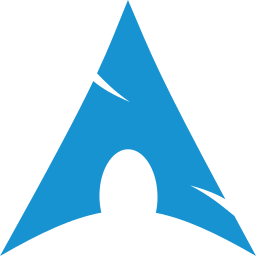

~/tools/desktop-os
Desktop OS
last updated 2026-08-02 · 6 recommendations · what changed
Windows 11 ships with telemetry, an advertising ID, and a cloud account it really,
really wants you to use. Linux removes the surveillance question entirely,
and in 2026, "the easy distro" and "the private distro" are the same
thing for most people.
before you switch
Check your non-negotiables first: specific Windows-only software (Adobe suite,
some games with kernel anticheat, niche work tools) is the real switching cost,
not difficulty. Try a live USB for an afternoon before touching your disk,
and dual-boot before going all-in.
what actually matters
update model
Fast, boring security updates with an undo button. Atomic/immutable distros make a bad update a reboot instead of an evening.
hardware support
Wi-Fi, GPU, sleep, fingerprint reader. Newer kernels mean newer laptops work; check your model before installing, not after.
sane security defaults
Full-disk encryption offered in the installer, SELinux/AppArmor on, firewall enabled. Defaults matter because nobody revisits them.
maintenance honesty
Some systems maintain themselves; some are a hobby. Both are fine: pick the one that matches the time you'll actually give it.
recommendations
Fedora Workstation
the default pick
open sourcefree
Fedora Workstation is modern, polished, and secure by default: SELinux
enforcing, Wayland, disk encryption one checkbox away, and fresh-but-tested
packages on a six-month rhythm. This is the "just give me the answer" pick, and the
base for this site's setups. The Atomic
variants (Silverblue) add image-based updates with rollback if you like your
OS unbreakable.
good
- Security defaults done for you: SELinux, firewalld, FDE in installer
- Current kernels mean good new-hardware support
- No telemetry beyond an opt-in counting ping
- Backed by a huge community; problems are googleable
mind the
- Media codecs and NVIDIA drivers need the RPM Fusion repo (10 minutes, once)
- Six-month upgrades are mostly painless, but they exist
- GNOME's workflow is opinionated: KDE spin if you disagree
Secureblue
the hardened-atomic pick
immutableopen sourcefree
Secureblue shares the atomic, image-based lineage of Fedora's Silverblue
variants, but it's built specifically with hardening defaults
beyond stock Fedora: stricter application sandboxing, hardened
kernel options, and security-first defaults instead of Fedora's
general-purpose ones. It's for people who want Fedora's update model
with meaningfully tighter security out of the box.
good
- Hardened kernel options and stricter sandboxing as defaults, not opt-in
- Immutable/atomic base: a bad update is a reboot, not a rebuild
- Inherits Fedora Atomic's tooling and package ecosystem
mind the
- Smaller project and community than mainline Fedora
- Stricter sandboxing occasionally means more friction with software that assumes a looser default
- Less battle-tested at scale than stock Fedora or the bigger distros here

Tails
the amnesic pick
amnesiconion-routedfree
Tails is not a daily OS, it's a tool. It boots from a USB stick, routes
all traffic through Tor, and forgets everything at shutdown
unless you explicitly persist it. It's for journalists, sources, abuse
survivors, or anyone who needs a session that provably never existed on the
machine. Keep one on a stick in a drawer; it costs nothing.
good
- Amnesia by default: the threat model is "this computer is hostile"
- Tor-only networking, no leaks by construction
- Runs on borrowed hardware without touching its disk
- Encrypted persistent storage is optional and explicit
mind the
- Tor speeds: browsing is noticeably slower, big downloads painful
- Not for daily use; no apps you install survive (outside persistence)
- Using Tails can itself be notable to a network observer

Qubes OS
the compartmentalized pick
compartmentalizedopen sourcefree
On Qubes, every task runs in its own disposable virtual machine:
browsing, email, work documents, and anything sketchy each get a
separate, isolated "qube" built on the Xen hypervisor. This is
the OS power users in a hardened
setup actually use: a compromise in one qube doesn't touch
the others, by architecture rather than hope. It's demanding on hardware
and patience, and remarkable at its job.
good
- Compartmentalization is architectural: a compromised qube stays contained
- Disposable VMs for anything risky, gone on close
- Trusted by security researchers and the hardened-threat-model crowd
mind the
- Heavy hardware requirements: plenty of RAM and a Xen-compatible CPU
- Steep learning curve; managing qubes is a daily habit, not a one-time setup
- Overkill for most threat models: this is the deep end, not the default

Arch Linux
the diy pick
open sourcefree
Arch installs nothing you didn't choose, ships packages hours behind
upstream, and comes with the ArchWiki, the documentation every
other distro's users end up reading anyway. Privacy-wise it's
whatever you build, which is the point: minimal by construction means
minimal attack and telemetry surface. Budget a free weekend for the install
and call it tuition.
good
- You understand your system because you assembled it
- Rolling release: no version upgrades, ever
- AUR has effectively every piece of Linux software
- The wiki teaches you Linux, not just Arch
mind the
- Security defaults (firewall, MAC, encryption) are yours to set up: forgetting them is worse than a managed distro
- Rolling means occasional manual-intervention updates; read the news feed
- Not the pick if tinkering isn't fun for you, and that's fine
NixOS
the declarative pick
open sourcefree
On NixOS, your entire system (packages, services, settings) lives in
one config file you can read, version, and replay. Every
change is atomic; every previous generation is a boot-menu entry. For privacy
auditing it's quietly brilliant: the system is exactly what the file says,
nothing more. The learning curve is real and the error messages are famous.
good
- Reproducible: your exact system from one file, on any machine
- Rollbacks built into the boot menu: updates are fearless
- Config-as-code doubles as documentation of every choice you made
- Enormous package set (nixpkgs is the largest repo going)
mind the
- The Nix language is its own learning project
- Out-of-tree software can be awkward (FHS expectations don't hold)
- Documentation lags the (fast) pace of the ecosystem
at a glance
all free; "difficulty" assumes no prior linux experience.
worth knowing
Turn on disk encryption at install time. It's a checkbox during
installation and a project afterwards. A lost laptop without FDE is a data
breach; with it, it's a hardware loss.
Staying on Windows? Harden it. Local account instead of
Microsoft account, O&O ShutUp10++ for telemetry, BitLocker on. It won't
match Linux's baseline, but it beats doing nothing while you plan the move.
macOS sits in between. Excellent device security, moderate
telemetry, one vendor's cloud pulling hard. FileVault on, analytics off,
iCloud minimal gets you a long way without changing platforms.
Want the deep end? See the Qubes OS entry above.
Fedora isn't the only "it just works" option.
Pop!_OS, Zorin OS, and Linux Mint are solid beginner-friendly
alternatives in the same spirit, all polished, all considerably
more Windows-like out of the box for newcomers who want a familiar
layout on day one. Not full recommendations here, but worth a look
if Fedora's GNOME-first workflow doesn't click for you.